Tentang Aplikasi
Bingung mau masak apa hari ini? LetMeCook adalah teman dapur
digital Anda! Aplikasi ini dirancang untuk memberikan inspirasi
resep yang mudah dan praktis bagi siapa saja, mulai dari anak
kos hingga ibu rumah tangga. Dengan panduan memasak langkah demi
langkah yang jelas, LetMeCook membuat proses memasak jadi lebih
seru, hemat, dan tentunya lebih sehat.
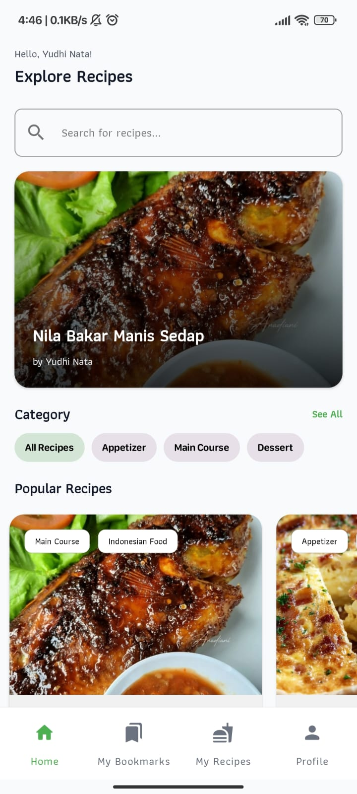
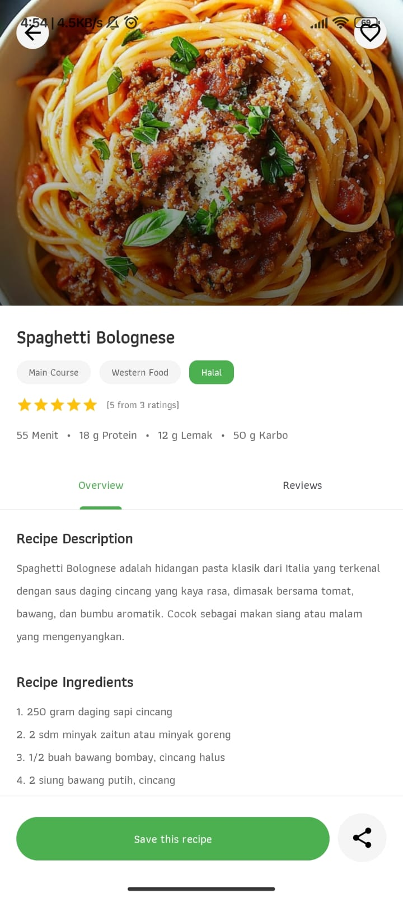
Fitur Aplikasi
Siap untuk pengalaman memasak yang baru? Aplikasi LetMeCook hadir
dengan fitur-fitur andalan untuk menjawab semua kebutuhan Anda di
dapur. Jelajahi semua kemudahan yang kami tawarkan di bawah ini!
1. Login & Register
Membuat akun pribadi itu mudah dan cepat. Cukup daftarkan diri
Anda dengan email dan atur profil pribadi, lengkap dengan foto
Anda. Dengan memiliki akun, semua resep favorit yang Anda simpan
dan resep yang Anda buat akan aman tersimpan di dalam "dapur
digital" pribadi Anda, siap diakses kapan saja.
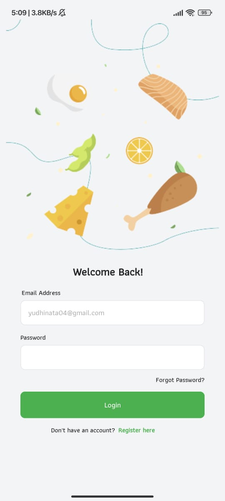
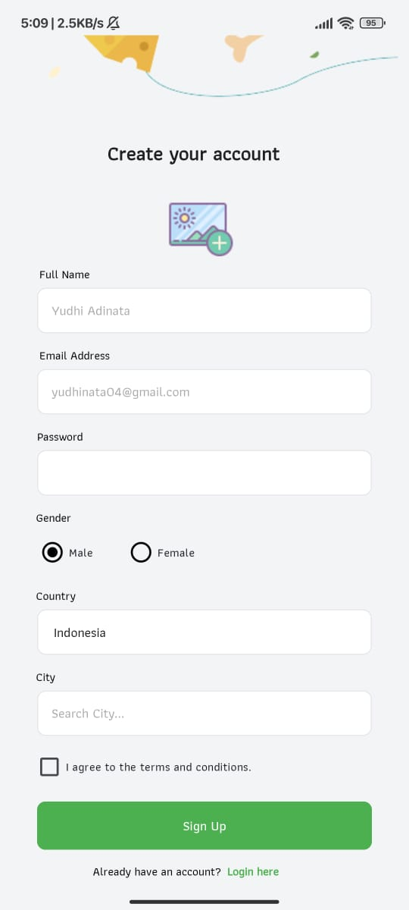
2. Home
Begitu masuk, Anda akan disambut dengan sapaan hangat dan
berbagai inspirasi masakan. Jelajahi resep-resep yang sedang
populer, cari masakan tertentu lewat kolom pencarian, atau
saring berdasarkan kategori seperti hidangan pembuka, utama,
hingga penutup. Halaman ini dirancang agar Anda selalu menemukan
sesuatu yang baru dan menggugah selera setiap hari.
3. Detail Resep
Semua yang Anda butuhkan untuk memasak ada di satu halaman yang
rapi. Setiap resep ditampilkan dengan foto besar yang menarik,
diikuti dengan deskripsi singkat, informasi nutrisi, daftar
bahan yang dibutuhkan, hingga panduan memasak langkah demi
langkah yang jelas dan anti gagal. Semua informasi disajikan
agar mudah dibaca saat Anda sedang sibuk di dapur.
4. Ulasan
Ingin tahu apa kata orang lain tentang sebuah resep? Lihat
ulasan dan rating dari komunitas pengguna LetMeCook! Anda juga
bisa ikut berkontribusi dengan memberikan peringkat bintang dan
menulis komentar berdasarkan pengalaman memasak Anda. Fitur ini
memungkinkan semua orang untuk saling berbagi tips dan
inspirasi.
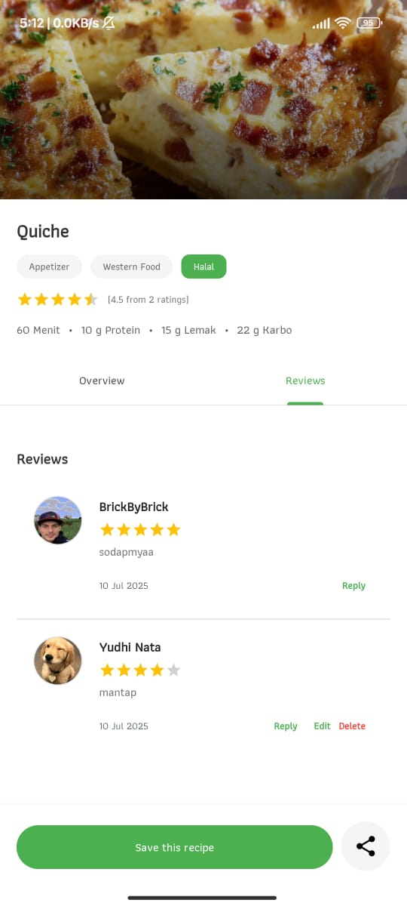
5. Simpan Resep
Menemukan resep yang Anda suka? Simpan saja dengan satu ketukan!
Fitur ini berfungsi seperti buku resep digital pribadi. Semua
resep yang Anda tandai akan terkumpul rapi di halaman "My
Bookmarks", sehingga Anda bisa dengan mudah menemukannya kembali
nanti tanpa perlu repot-repot mencari ulang.
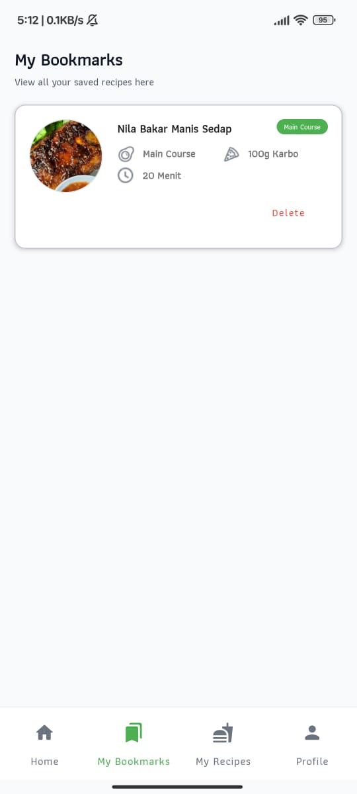
6. Tambah Resep
Punya resep andalan keluarga atau kreasi masakan unik? Bagikan
keahlian Anda kepada dunia!Fitur "Add Recipe" menyediakan
formulir sederhana untuk Anda menuliskan judul, deskripsi,
bahan, dan langkah-langkah pembuatan resep. Anda bahkan bisa
menambahkan foto masakan Anda agar lebih menggugah selera dan
menginspirasi pengguna lain.
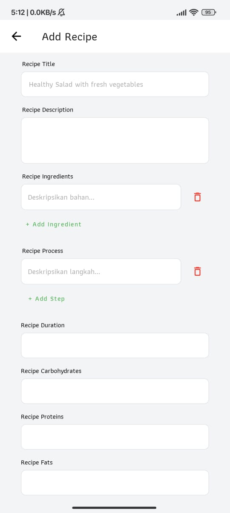
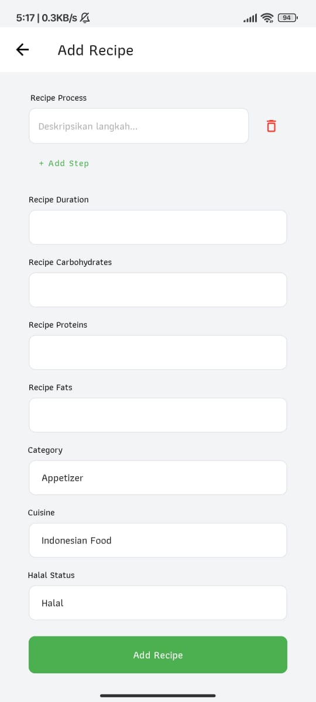
7. Resep Saya
Semua resep yang pernah Anda buat dan bagikan akan terkumpul
rapi di halaman "My Recipes". Halaman ini adalah galeri pribadi
dari kreasi kuliner Anda. Dari sini, Anda bisa dengan mudah
melihat kembali, mengedit detail resep jika ada perubahan, atau
menghapusnya kapan pun Anda mau.
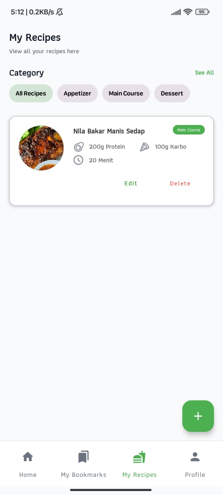
8. Profile
Halaman profil adalah pusat kendali untuk akun Anda. Di sini,
Anda bisa melihat informasi pribadi seperti foto, nama, dan
email secara sekilas. Halaman ini juga menyediakan jalan pintas
untuk mengakses koleksi resep yang Anda simpan, melihat resep
yang pernah Anda buat, memperbarui data diri, atau keluar dari
akun dengan aman.
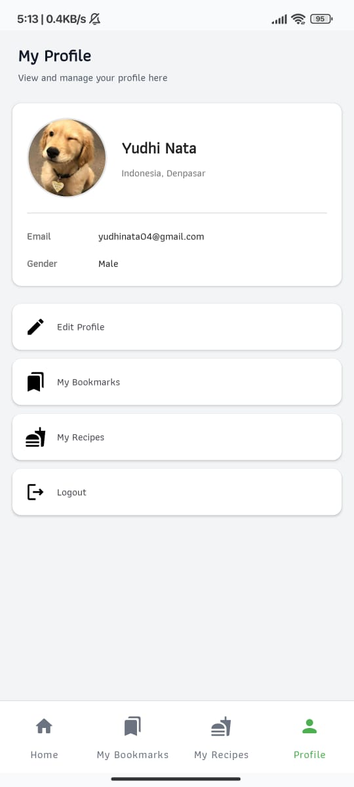
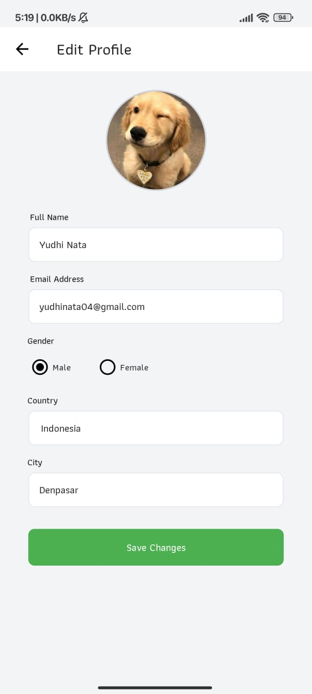